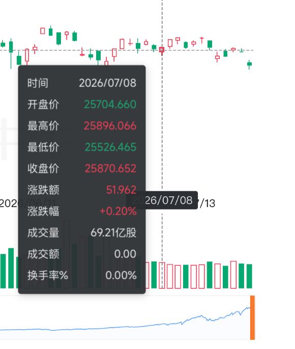

机构巨鲸都在做空，美股危险了
前面我们采集了很多地址的历史交易和持仓信息，根据每个地址的盈利和胜率我们就可以找到聪明钱群体。
我按照历史盈利进行降序之后，收藏了前几名，然后我发现了一件蹊跷的事情，就是里面大部分人都是在做空的，不清楚是直接做空还是对现货进行的对冲。
我是在2026.07.08发现的这个事情，并且跟我朋友说的，然后昨天我发现美股纳斯达克指数有一个三个点的回调。
这个回调是刚开始呢还是已经结束了呢是不知道的，但是目前他们还是很大的仓位在做空的。按照数据来说的话，我们暂且当作他们是直接做空的吧。希望后续美股有一个比较大的回调来印证我们的猜想。
到时候回调结束这些巨鲸和聪明钱再做多的话，那我们这个聪明钱追踪就比较厉害了。
现在就拭目以待吧。
-2026-07-24
